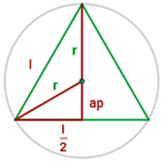
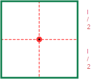
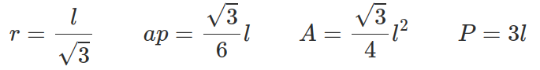
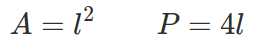
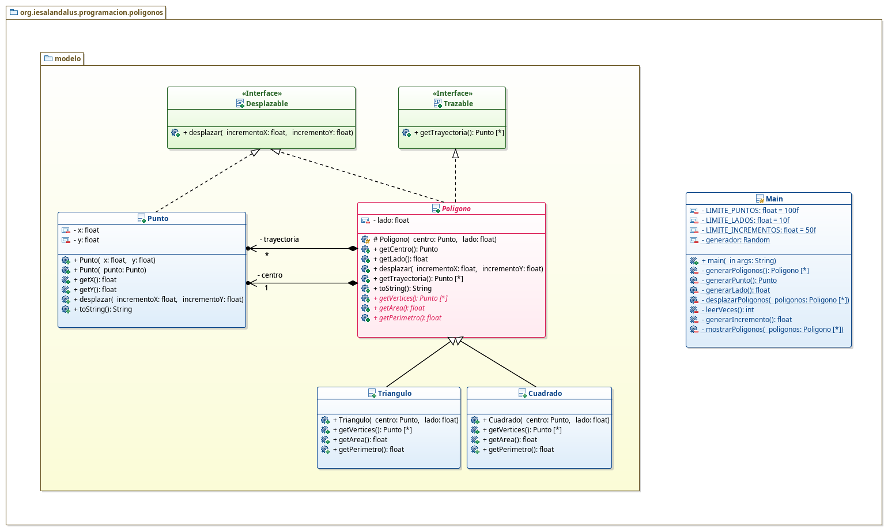

1.- Descripción de la tarea
¿Qué te pedimos que hagas?
La tarea va a consistir en simular una serie de polígonos regulares que son capaces de desplazarse y de los que podremos conocer la trayectoria que han seguido y sus características básicas como el área y el perímetro de los mismos.
Para ello deberás implementar la clase Triangulo y Cuadrado, que heredarán de la clase abstracta Poligono (que modelará un polígono regular genérico). Un polígono tendrá un centro (Punto) y el tamaño del lado.

- Para el triángulo, las diferentes fórmulas que debemos conocer son las siguientes:
 - Para el cuadrado son más sencillas:

Fijándote en los dibujos, las fórmulas y tu astucia, debes ser capaz de calcular los vértices de un triángulo y de un cuadrado y su área (A) y su perímetro (P).
El programa generará un triángulo y un cuadrado con centro aleatorio y lado también aleatorio (dentro de unos límites acotados por unas constantes). Luego nos pedirá el número de veces que queremos desplazarlos (al menos dos veces), realizará los desplazamientos aleatorios (también acotados por otra constante) y mostrará los resultados de todo ello. Una posible salida del programa sería la siguiente (notar que todos los decimales están limitados a dos).
Cuantas veces quieres desplazarlos: 4
Triángulo -> Centro: (31,00, 57,30), Lado: 8,08, Área: 28,30, Perímetro 24,25, Vértices: [(26,96, 54,96), (35,05, 54,96), (31,00, 61,96)]
Trayectoria -> [(43,88, 21,80), (50,96, 31,67), (45,06, 46,21), (33,21, 68,15), (31,00, 57,30)]
Cuadrado -> Centro: (34,45, -26,80), Lado: 0,82, Área: 0,68, Perímetro 3,30, Vértices: [(34,04, -27,21), (34,86, -27,21), (34,86, -26,39), (34,04, -26,39)]
Trayectoria -> [(26,50, -15,11), (8,02, 6,65), (4,53, -4,11), (29,24, -15,68), (34,45, -26,80)]El diagrama de clases que debes implementar el siguiente y a continuación te doy algunos detalles.

Primeros Pasos
- Lo primero que debes hacer es crear un proyecto java nuevo llamado
HerenciaPoligonosXYZ, donde XYZ serán tus iniciales. - Debes introducir correctamente la librería
Entradaen el proyecto para utilizarla posteriormente. - Los paquetes en los que se encuentren las diferentes clases deberán ser los indicados en el diagrama de clases.
Punto
- Declara la clase
Puntotal y como se indica en el diagrama. - Crea los dos constructores que se indican.
- Implementa los métodos
getcorrespondientes. - El método desplazar cambiará las coordenadas
xeylo que indique el incremento en cada una de ellas. - El método
toStringdevolverá una cadena formateada con ambas coordenadas separadas por coma y encerradas entre paréntesis, restringiendo los decimales de cada una de ellas a 2.
Interfaces
- Extrae la interfaz
Desplazablede la clasePunto. - Declara la interfaz
Trazabletal y como se indica.
Poligono
- Crea la clase
Poligonocon las especificaciones de herencia que se muestran en el diagrama y atributos indicados. - Crea el constructor con la visibilidad adecuada. Debes crear la trayectoria y añadir el centro (ten cuidado con el aliasing que puede dar problemas no deseados y piensa cómo debes añadirlo)
- Crea los métodos
get. - Implementa el método
desplazarque deberá desplazar el centro y añadirlo a la trayectoria (ten cuidado con el aliasing que puede dar problemas no deseados y piensa cómo debes añadirlo). - Implementa el me´todo
getTrayectoriaque devolverá una nueva lista con los puntos de la trayectoria. - Implementa el método
toStringque utilizará el patrón plantilla para mostrar el centro, lado, área, perímetro y vértices del polígono tal y como se muestra en el ejemplo de salida. - Declara los métodos abstractos indicados.
Triangulo
- Declara la clase
Triangulopara que cumpla las especificaciones del diagrama. - Implementa el constructor indicado.
- Implementa los métodos
getindicados.
Cuadrado
- Declara la clase
Cuadradopara que cumpla las especificaciones del diagrama. - Implementa el constructor indicado.
- Implementa los métodos
getindicados.
Clase MainApp
- Crea los atributos y constantes indicados.
- Implementa el método
leerVecesque nos pedirá por teclado el número de veces que queremos desplazar los polígonos y lo repetirá mientras sea menor que 2. Finalmente devolverá dicho valor. - Implementa el método
generarPuntoque devolverá unPuntocon coordenadaxeyaleatoria dentro de los límites[-LIMITE_PUNTOS/2, LIMITE_PUNTOS/2). - Implementa el método
generarLadoque devolverá un valor aleatorio para el lado dentro de los límites[0, LIMITE_LADOS). - Implementa el método
generarIncrementoque devolverá un valor aleatorio para cada incremento dentro de los límites[-LIMITE_INCREMENTOS/2, LIMITE_INCREMENTOS/2). - Implementa el método
generarPoligonosque devolverá una lista que contenga unTrianguloy unCuadradogenerados aleatoriamente (utilizando los métodos anteriores). - Implementa el método
desplazarPoligonosque pedirá por teclado el número de veces que vamos a desplazar, repetirá dicho número de veces un recorrido por la lista pasada por parámetro y realizará el desplazamiento de cada uno de ellos un incremento aleatorio en cada una de las coordenadas (utilizando los métodos anteriores). - Implementa el método
mostrarPoligonosque recorrerá la lista pasada por parámetro (utilizando un iterador) y dependiendo del tipo de instancia mostrará su nombre y mostrará su representación como cadena tal y como se aprecia en el ejemplo de salida. - El método
maingenerará los polígonos, los desplazará el número de veces que indique el usuario y finalmente los mostrará, todo tal y como se indica en el ejemplo de salida.